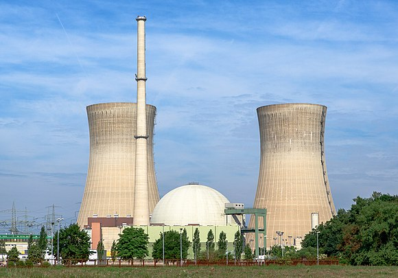
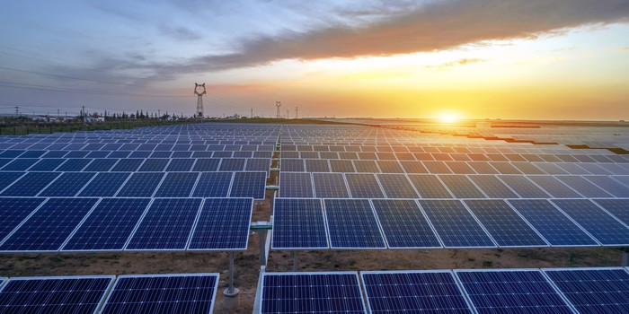

|
Offshore Wind Development |
The Energy Department has selected seven projects that will accelerate the commercialization of innovative offshore wind technologies in the United States. Each project will receive up to $4 million from the Energy Department to complete the engineering, site evaluation, and planning phase of their project. Upon completion of this phase, the Energy Department will select the up to three of these projects to advance the follow-on design, fabrication, and deployment phases to achieve commercial operation. Each of the these projects will be eligible for up to $47 million in additional funding over four years, subject to Congressional appropriations. Please click on the link for further information Offshore Wind Development |
 |
Nartural Gas |
Natural gas is a fossil energy source that formed deep beneath the earth's surface. Natural gas contains many different compounds. The largest component of natural gas is methane, a compound with one carbon atom and four hydrogen atoms (CH4). Natural gas also contains smaller amounts of natural gas liquids (NGL; which are also hydrocarbon gas liquids), and nonhydrocarbon gases, such as carbon dioxide and water vapor. We use natural gas as a fuel and to make materials and chemicals. Please click on the link for further information Natural Gas |
|  |
Nuclear Power Reactor |
An operating nuclear power reactor is designed to produce heat for electric generation. Power reactors are distinguished from nonpower reactors which are reactors used for research, training, and test purposes, and for the production of radioisotopes for medical, industrial, and academic uses. Please click on the link for further information Nuclear Power Reactor |
 |
Hydeo Power Impact |
Hydropower is a key contributor to the US renewable energy portfolio due to the diverse benefits it provides to the electric power system. Ensuring the sustainable operation of existing hydropower facilities is of great importance to the US renewable energy portfolio and the reliability of the electricity grid. Please click on the link for further information Hydro Power Impact |
|  |
Solar Energy |
Solar energy is radiant light and heat from the Sun that is harnessed using a range of ever-evolving technologies such as solar heating, photovoltaics, solar thermal energy, solar architecture, molten salt power plants and artificial photosynthesis. There are solar maps provide average daily total solar resource information on grid cells. Please click on the link for further information Solar Energy |